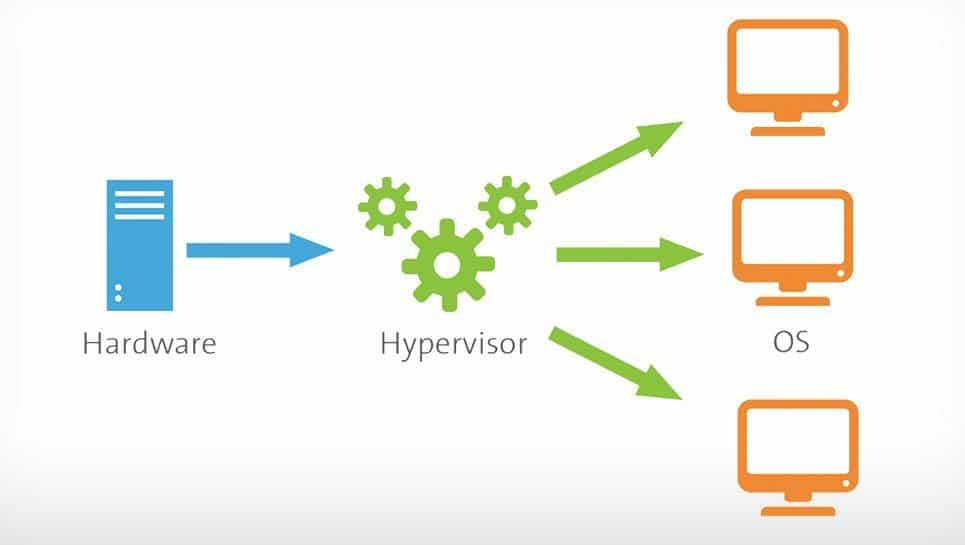

I am here to make cloud services easier to understand for you. Cloud services are very intimidating to new users and require much understanding before being used. When I started the interfaces were too daunting so I quit. I tried AWS years ago without understanding virtual machines, instances, the need for Linux or how in the world I was able to choose the number of processors on my cloud service. How did they process servers for me? It all just didn't make sense. Let's try to piece things together and see if we could make sense of cloud services…
Frequent Words
Hypervisor: The operating system of operating systems
Instance: A machine simulated within another machine, there can be multiple instances.
Virtual Machine: Also known as a VM is said machine from above, though with a different name.
Cloud: An external computer away from your home or business that outsources processing power or storage
To understand conceptually how cloud services work you need to know the parts that make the whole. The terminology above is a reference, which if all this is new to you, is good to review before and after the article. A cloud is an external computer used remotely from your workplace or PC. After some instructions it can run independently processing any whim or business. This processing is the service; the remote access is the cloud and that is a cloud service.
Cloud service hosts use warehouses with shelves of supercomputers
The company owning the cloud service owns physical computers, usually supercomputers, which take storage and processing for a fee from clients. They take these numerous supercomputers on shelves, with perhaps 100+ cores, 100TB, and 100GB+ RAM storage per computer, and section their cores & RAM into separate internally created computers. If one "virtual computer" within one supercomputer were to exist, let us say 100 evenly divided virtual computers or from now on we will call them virtual machines, then our example supercomputer would have 1 core, 1TB of storage & 1GB of RAM.
Let us say we take this virtual machine and we sell it to you for 1 cent per hour. You have now engaged in purchasing a cloud service from a cloud provider. 100 virtual machines in one supercomputer would be $1/hr. I will expound on the most frequent terms used in cloud servicing. Firstly is "Hypervisor". This example supercomputer would have an operating system, let us say Windows 10. And, I warn you this would be highly ineffective but it will give you the concept on how Amazon and Google do this. Windows 10 can then use operating systems within itself, using software like Virtual Box to section its hardware processors, storage, & RAM to virtual machines.
Splitting with hypervisors is versatile
This process would make Windows 10 the hypervisor and the virtual machines the service to sell to a client. A hypervisor supervises the operating systems within itself. The hypervisor is the operating system chief of all the operating systems within it. Though the Windows 10 example is not effective as a hypervisor. Each virtual machine is known as an instance. You, yourself, could split your home computer into instances with virtual box as a practice, even splitting the physical machine laterally or vertically. I recommend giving that a try with Virtual Box just for kicks.
If you were to split it vertically this means you have a machine within a machine within a machine. Windows holds Linux which holds Linux again. Or you could split laterally, Windows 10 with 10 Linux virtual machines, splitting your machine in 10 side by side. I emphasize Windows 10 is not effective for any type of cloud servicing apart from remote gaming as a service. Instead, if you were to purchase a cloud service for business or a personal website Linux is a necessity.
Linux saves cash
Linux is highly important due to efficiency, bloat free coding & streamlined/direct code. No space is wasted on GUIs, constant updates, unnecessary programs or legacy code, unremoved from previous versions(Each Windows version upgrade had a ghost of its previous version within itself, making it less effective). Linux is more primitive and versatile than Windows. Its evolution is simple, direct, making cloud servicing synonymous with Linux and therefore synonymous with servers as well.
Cloud servicing = Linux = most servers….
If you are a professional technologist there is great benefit from learning Linux for server administration. For me, just to host a minecraft server on a cloud server I had to use Linux to save costs. Google cloud offers $300 credit for a 1 year trial and it is my hope to use the service fully with this game server. To save credits I used Linux instead of Windows in the virtual machine; it saved credits.
As a further example website hosts use Linux to give you a place to create a website. Most WordPress providers have a Linux back-end and WordPress front end likely using a cloud hosting service like AWS or Google cloud. Examples of website hosts using Linux are; WordPress.com, SquareSpace.com, Weebly.com, Shopify.com, etc.
Reviewing cloud services
Now that you understand a bit more about cloud servicing let us review. A cloud service is owned by a company with warehouses of shelves of supercomputers with ridiculous numbers of processors, storage, & RAM. Each of these supercomputers is split unevenly into virtual machines. Each virtual machine has its own operating system. The operating system that governs each virtual machine is the hypervisor. The hypervisor is the operating system of operating systems. You can split a computer laterally or vertically. You can also group all supercomputers into one hypervisor and split the whole laterally, vertically, and unevenly. If you are interested, check out distributed computing. Each virtual machine is known as an instance. You need to use Linux when using cloud services. Linux is synonymous with cloud servicing.